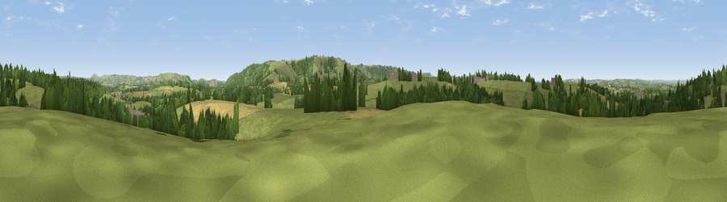

Viewpoint near Okeford Fitzpaine
#26697 in England · top 48% of its area beats it · near Okeford Fitzpaine · path 72 mWhere it is
The exact computed spot (ST 79025 11925). Click the marker for map links.
Public access: the nearest public right of way is about 72 m away — the final stretch may cross private land. Computed from Natural England's CRoW access layer and OpenStreetMap rights of way — not the legal definitive map. Always verify locally.
The view, rendered

A 360° render of this exact spot computed from the terrain model, tree cover and land cover — summer colours, afternoon light, calibrated against photographs of famous viewpoints. Real trees, hedges and buildings will differ in detail.
The panorama
Grey silhouette: terrain skyline in each direction (720 bearings, Earth curvature and refraction included). Dashed green: skyline with trees (+15 m) and buildings (+8 m) as obstacles. Blue strip: how far the ground is visible on each bearing.
Where the view opens
Wedge length = distance to the farthest visible ground on that bearing (vegetation-aware). Rings at 10, 25 and 50 km.
What fills the view
65% grassland · 18% woodland · 15% cropland · 1% built-up
Angular shares of the visible panorama (visual magnitude), not map area. Landscape diversity 0.40 (0–1 Shannon).
Key numbers
More beautiful places nearby
The staircase of upgrades: each row has a higher view potential than everything closer. Driving times are estimates from straight-line distance, calibrated against real road routing — check an actual route before setting out.
| Place | Direction | Drive | Score |
|---|---|---|---|
| Copse Hill | N · 1 km | ~3 min | 52.0 |
| Viewpoint near Belchalwell | SSE · 3 km | ~8 min | 70.8 |
| Bell Hill | SSE · 4 km | ~9 min | 73.0 |
| Hambledon Hill | E · 6 km | ~12 min | 74.6 |
| Viewpoint near Berwick St John | ENE · 16 km | ~28 min | 78.2 |
| East Hill | SSW · 28 km | ~45 min | 79.6 |
| Viewpoint near Sutton Poyntz | SSW · 29 km | ~46 min | 79.9 |
| Viewpoint near Owermoigne | S · 30 km | ~47 min | 81.0 |
50.90641, -2.29968 · source: screening · position refined by local search. Computed location — check access rights before visiting.